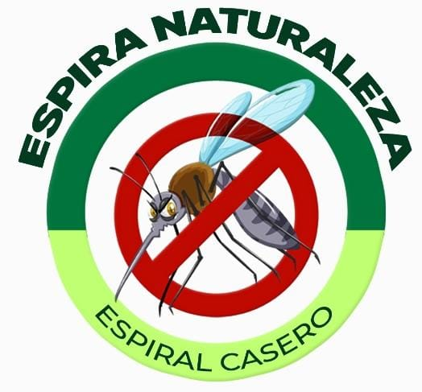

Misión - Dermashield
En Dermashield, nuestra misión es proporcionar un repelente en spray eficaz y seguro que proteja a nuestros usuarios de todo tipo de insectos sin comprometer su salud ni el medio ambiente.

Misión - Espiral Casero
Nuestra misión es ofrecer espirales caseros naturales y sostenibles de alta calidad que ayuden a las personas a proteger su hogar y su familia de manera efectiva y respetuosa con el medio ambiente.